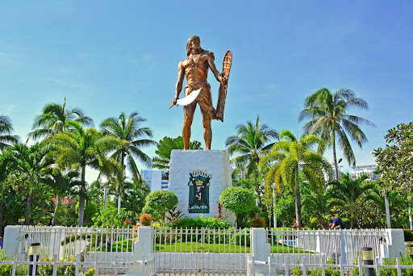
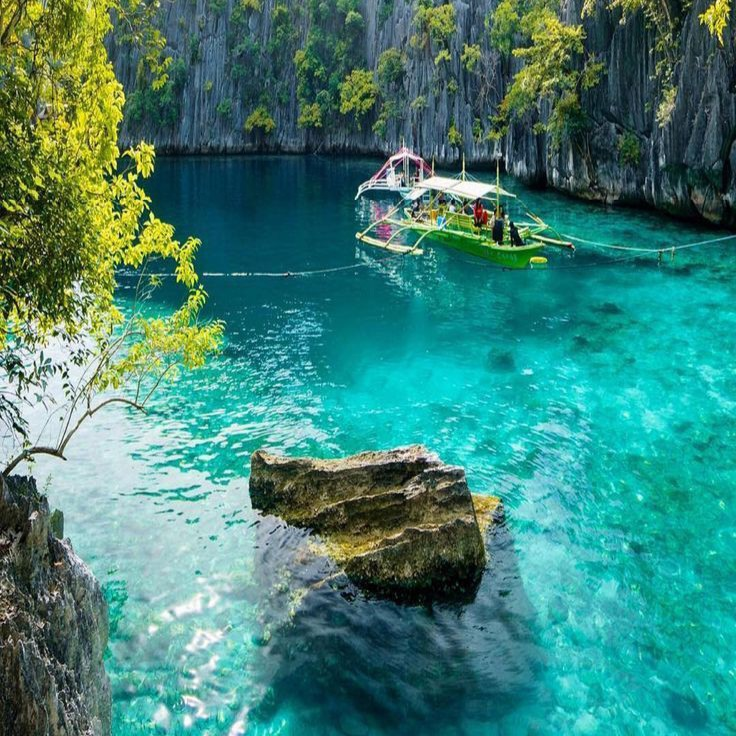
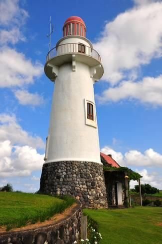

It is popular for its
beaches
and
blessed
with a
long
stretch of powdery white sand, crystal clear and azure waters, and a stunning sunset.
Boracay is
the
most iconic island in the Philipines
BOHOL
Bohol is famous for its Chocolate Hills; its tarsiers, which may be the
world's
smallest primate; its heritage sites and old stone churches.

CEBU
One of the most visited tourist destinations in the Philippines. Dubbed
as
the
"Queen City of the South," it boasts of many popular beaches, islands and diving spots.
ILOCOS
Ilocos Region is known for its historic sites, beaches, and the
well-preserved
Spanish colonial city of Vigan.

PALAWAN
One of the best places to visit in the Philippines, is consistently
ranked
as
one of the best islands in the world, and for a good reason

BATANES
Batanes Island, called the Home of the Winds, is considered the smallest
province in the Philippines. Batanes’ refreshingly chill and peaceful vibe gives local
and
foreign travelers a different taste of island life.